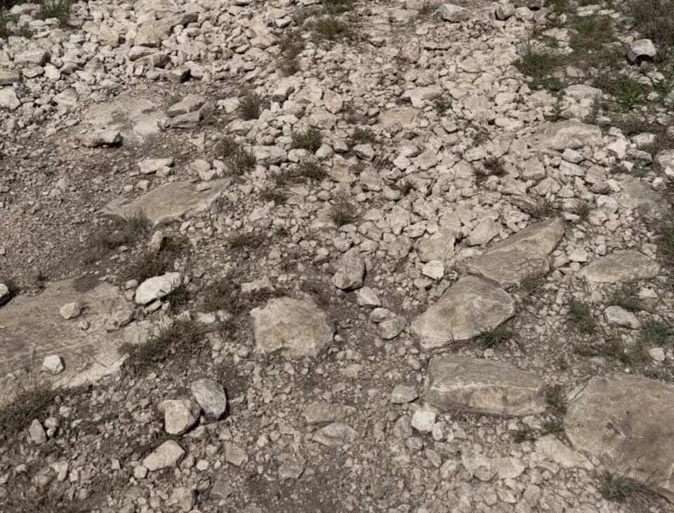
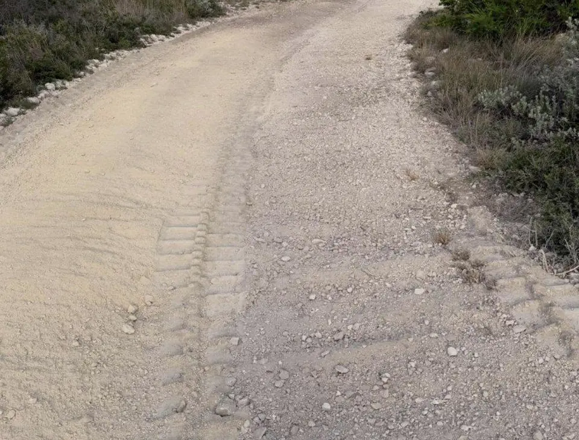
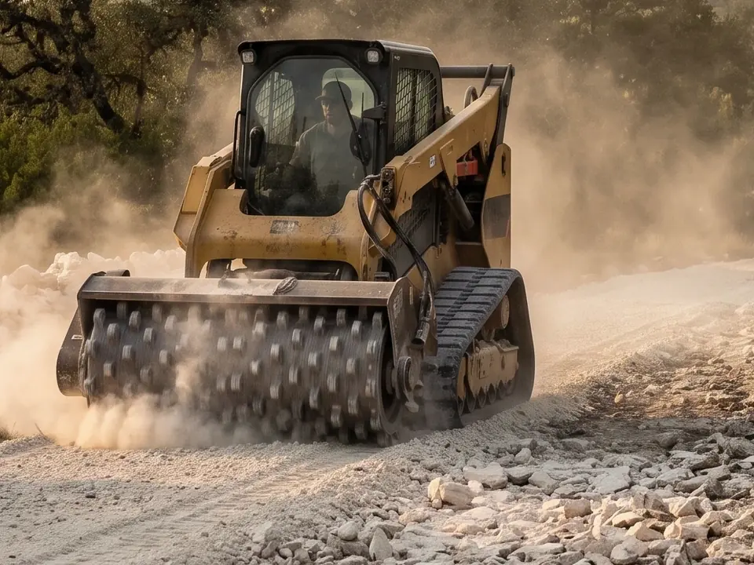
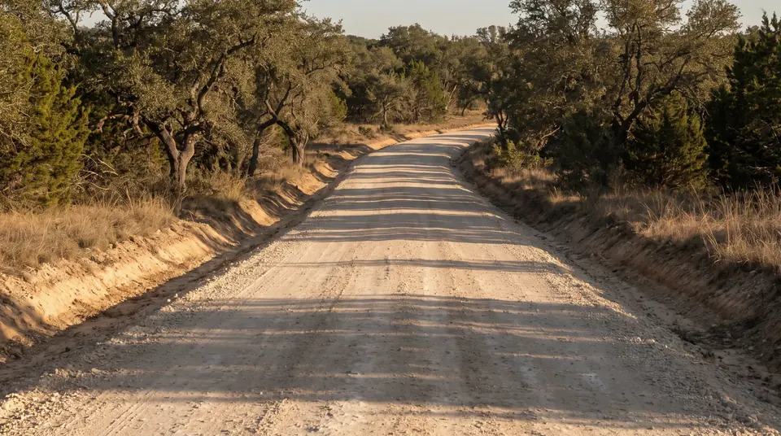
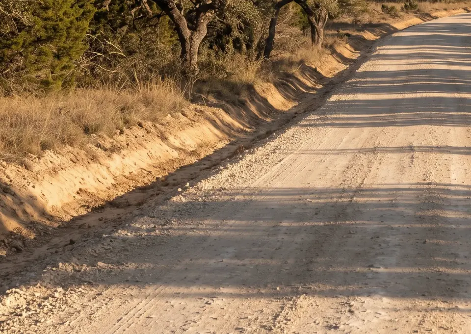

On-site rock crushing for Central Texas roads and driveways
9 Arrow crushes the surface rock already on your land into a fine, compactible road base, then builds the road on it. Rock crushing, also called rock milling or rock grinding, means no imported base to buy and no trucks to wait on.
- Your own rock, made into road base
- No imported base to buy or haul
- Graded with crown and drainage
- Built for trucks and heavy equipment
What is on-site rock crushing?
On-site rock crushing, also called rock milling or rock grinding, breaks the loose surface rock on a property into road base right where it lies. 9 Arrow uses crushing heads and attachments that grind rock to a fine, consistent grade. The result is a compactible base for roads and driveways, made from your own rock.
Loose rock in. Road base out.
A real 9 Arrow job: the same ground before and after on-site rock crushing.


Rock crushing turns Hill Country rock into road base
Much of Central Texas and the Hill Country sits on limestone, with thin soil over rock and loose rock across the surface. That rock makes ground rough to drive and hard to build on. On-site rock crushing puts it to work.
9 Arrow grinds the existing surface rock with crushing heads and attachments until it reaches a fine, consistent grade. Crushed that fine, the rock compacts into a firm road base. Loose rock left as it lies will not pack into a smooth road. The same rock that made the land hard to use becomes the surface you drive on.
Around the Hill Country you will hear this called rock crushing, rock milling or rock grinding. The idea is the same: your own rock, processed on site into base for a road or driveway.

Rock crushing vs. hauling in road base
| Crush rock on site | Haul in road base | |
|---|---|---|
| Where the base comes from | Rock already on your property | A supplier, trucked to your land |
| Material to buy | None. Your rock is the material | Every load of road base |
| Deliveries | No delivery trucks to schedule | Work waits on loads arriving |
| The loose rock on site | Becomes part of the road | Stays on the ground or gets moved |
| Overall cost | Reduced, with no imported material | Material plus trucking |
Every property is different. On a discovery call or site visit we look at your ground and the road you need, and tell you straight whether crushing on site is the right call.
What we build with crushed rock
Crushed rock base is the layer a good road stands on. We use it wherever a property needs a way in that holds up.
- Ranch roads that carry trucks and trailers
- Internal roads on development tracts
- Driveways to home sites
- New access where there was none

One crew for the whole road
Rock crushing is the material processing step in a full road build. 9 Arrow handles the rest too: land clearing and brush removal, rough grading and leveling, drainage and erosion control, culvert installation, road base preparation and fine grading. See the full scope on our access road building page.
Every road is graded with proper crown and drainage and built to support heavy equipment and truck traffic, so it stays usable through changing weather. When the route runs through cedar and brush, our forestry mulching machines open it first and grind the growth in place.

How rock crushing works
- Look at the groundA discovery call and a site visit show us the rock you have, the route and the access.
- Clear the routeForestry mulching removes cedar and brush so the rock and ground are open to work.
- Crush the rockCrushing heads and attachments grind the surface rock to a fine, consistent grade on site.
- Grade, crown and drainThe base is shaped with proper crown and drainage, with culverts where water needs to cross.
Is on-site rock crushing right for your land?
If most of these sound like your property, crushing on site is worth a look.
- You see loose rock and limestone across the ground
- You need a road, driveway or access route
- Cedar or brush is in the way. We clear it first
- You would rather not buy and truck in road base
- Trucks, trailers or heavy equipment will use the road
Rock crushing across the Hill Country
We're based in Spring Branch and crush rock on properties across Central Texas and the Texas Hill Country. We come to your land.
I have had 9 Arrow do multiple jobs for me and they come through every time. This business operates with all the values you'd expect from a Central Texas, Family run company.
Rock crushing questions
Is rock crushing the same as rock milling?
In Central Texas, rock crushing, rock milling and rock grinding usually describe the same job: breaking surface rock into finer material on site. 9 Arrow uses crushing heads and attachments that bring rock down to a fine, consistent grade, so the result is a compactible road base made from rock already on your property.
Can you turn the rock on my property into road base?
Yes, when your land has surface rock to work with. On-site rock crushing at 9 Arrow turns existing surface rock into a fine, compactible road base right on the property, using crushing heads and attachments that break the rock to a consistent grade. A discovery call or site visit tells us what your ground has to offer.
How much does rock crushing cost?
9 Arrow prices rock crushing after a discovery call or site visit, because every property is different. Topography, access, maneuverability and soil conditions all shape the work, and the estimate is shown by the day or by the acre. Crushing your own rock also removes the cost of buying and trucking in imported road base.
Is crushing rock on site cheaper than hauling in road base?
On-site rock crushing reduces project cost because it eliminates imported road base material. You skip buying base from a supplier and trucking it to the property. Every job is different, so 9 Arrow prices rock crushing after a discovery call or site visit and shows the estimate by the day or by the acre.
How strong is a crushed rock road base?
A crushed rock road base from 9 Arrow is fine, consistent and compactible, which makes for a stronger and more stable road surface. Roads are graded with proper crown and drainage and built to support heavy equipment and truck traffic, so the road stays usable through changing weather and regular use.
Does on-site rock crushing make a project go faster?
On-site rock crushing speeds project completion because the road base is made on the property. There is no waiting on imported material deliveries. 9 Arrow can clear the route, crush the surface rock and grade the road as one project, which keeps the work moving from brush to finished base.
Do you build the whole road or only crush the rock?
9 Arrow builds the whole access road. Road building covers land clearing and brush removal, rough grading and leveling, drainage and erosion control, culvert installation, road base preparation, fine grading and material processing such as on-site rock crushing. Every road is graded with proper crown and drainage to carry heavy equipment and truck traffic.
Do you offer rock crushing near me?
9 Arrow is based in Spring Branch and crushes rock across Central Texas and the Texas Hill Country, including Bulverde, Canyon Lake, New Braunfels, Boerne, Blanco, Wimberley, Kerrville, San Antonio and Comal County. We come to your land. Call (210) 247-8410 or request an estimate to check your property.
Related services

From the blog
All guides
How much does land clearing cost in Texas?
Land clearing cost in Texas starts with the scope of work. Here is how mulching, grubbing, brush piles and access each shape an estimate, and how to compare bids fairly.
Read the guideDoes clearing land increase property value? What Texas buyers see
Does clearing land increase property value? It can, when clearing turns hidden, unusable acreage into ground buyers can walk, picture and build on. Here is what helps and what hurts.
Read the guideTell us about your road.
Four quick steps. Rock crushing is already checked. We'll call to set up a discovery call, look at the ground with you, and price the work by the day or by the acre.
- Discovery callYour land, the road you need, your timeline.
- Site visitThe rock you have, the route, access and terrain.
- EstimateBy the day or by the acre.
- The workClear, crush, grade. Not finished until we're proud of it.
Rather talk now? (210) 247-8410